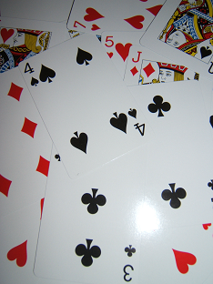

 The game of war is a two-player game played with a standard 52 card deck. Both players start with 26 cards placed face down in a stack. A turn consists of both players simultaneously flipping the top card from their decks. The player with the higher ranking card takes the other player's card and places them both on the bottom of their deck. In the case of a tie (a war), the cards are placed in the centre along with the top three cards of each player's decks. They then play another round and the winner of the next round also takes the cards in the centre. In the case of another tie, the tied cards are added to the centre, three more cards are placed in the centre from the top of each deck, and play commences with the remainder of each other's deck.
A player wins by taking all cards (including the cards in the centre). If a player does not have enough cards to place in the centre during a war, they place as many as they can while ensuring they have one left over for the next turn. If a war is initiated with a player's last card then the cards in the centre are sent back to the decks they came from and a new turn is started.
A player is said to decimate the other player if they never lose a card to the other player and a war is not initiated with the other player's last card. In other words, exactly one play through the deck is made before a winner is declared.
You are playing with a friend and you have run into a streak of bad luck by losing the last few games. A new game has just been dealt and your opponent decides to take a quick break before starting the game. You decide to cheat (since you want to win so badly), so you take a peek at both of your decks. What you would like to do is arrange your cards so that you decimate your friend.
The first line of input contains an integer that denotes the number of test cases to follow. Each line contains the description of your friend's 26 cards in the order they will be played. Each card consists of two characters RS where R is the rank of the card and S is the suit. Ranks 2-9 are denoted by characters '2'-'9', 10 by 'T', jack by 'J', queen by 'Q', king by 'K', and ace by 'A'. The suits are 'H', 'C', 'D', and 'S' for, respectively, hearts, clubs, diamonds, and spades. Aces are considered to be the highest rank.
For each test case, output a single line containing the word yes if you can rearrange your cards to decimate your friend. If you cannot do this, then output a single line containing the word no.
2 2C 2D 2S 2H 3C 3D 3S 3H 4C 4D 4S 4H 5C 5D 5S 5H 6C 6D 6S 6H 7C 7D 7S 7H 8C 8D 8S 8H 9C 9D 9S 9H TC TD TS TH JC JD JS JH QC QD QS QH KC KD KS KH AC AD AS AH
yes no